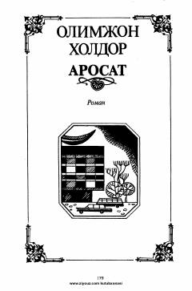

AMustaqillik yo'lida jon tikkan zamondoshlar haqida o'zbek romani.
"Arosat" — O'zbek yozuvchisi Olimjon Xoldor tomonidan yozilgan roman. Asar O'zbekiston mustaqilligini qo'lga kiritish yo'lida jon tikkan zamondoshlar haqidagi dastlabki izlanishlardan biri sifatida taqdim etilgan. Roman mustaqillik sharofati, uning fidoyilari va milliy ozodlik uchun kurash mavzularini qamrab oladi.